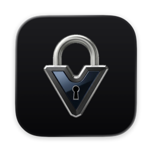
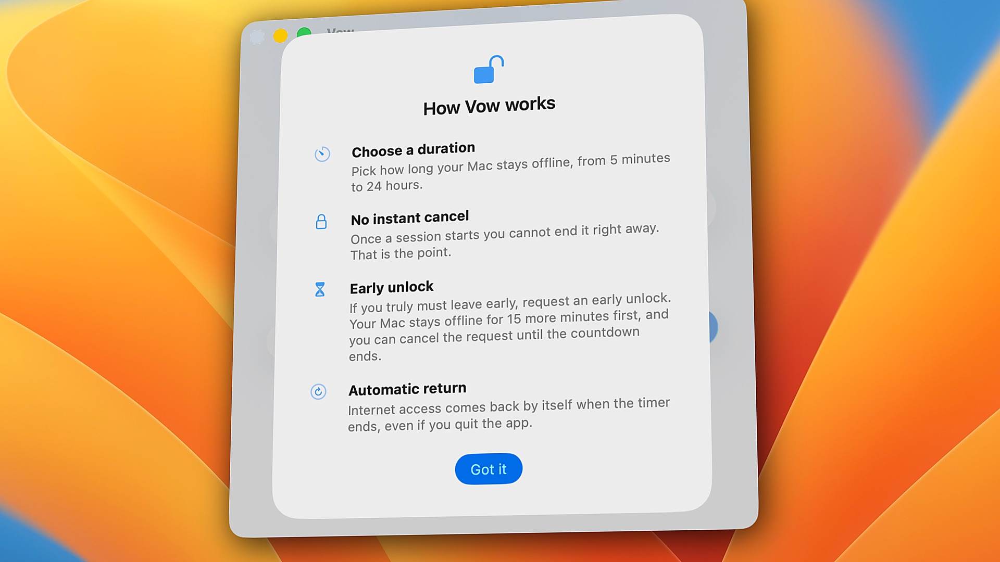
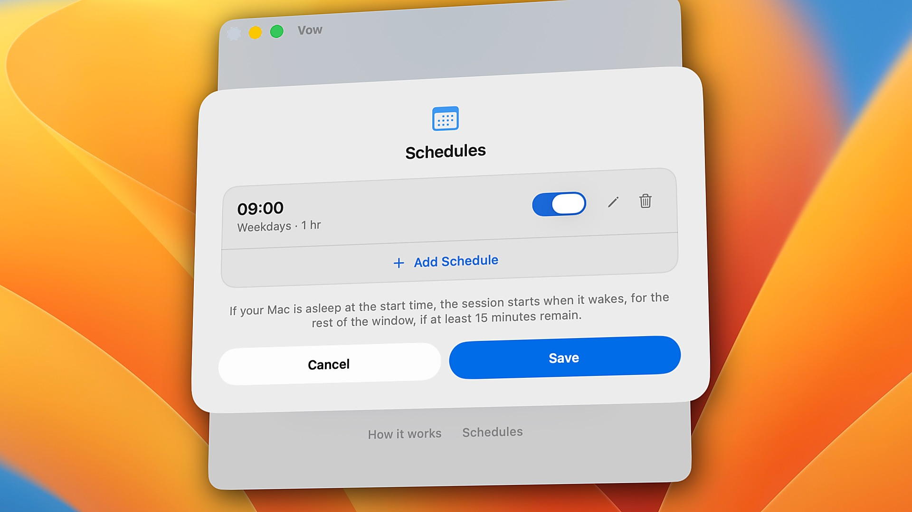

Vow
$9.99
- One-time purchase · Owned forever (No subscription)
- Valid on up to 2 personal Macs
- Includes all future 1.x updates
Secure checkout by Paddle, our merchant of record. macOS 26 or later, Apple Silicon.
The internet is the distraction.
Vow turns off your Mac's internet and keeps it off until your timer ends. Every app, every browser, every connection.
5 minutes to 24 hours · 3 free sessions, then $9.99 once · No subscription · macOS 26+, Apple Silicon






Block YouTube, and you open Netflix. Block WhatsApp, and you switch to Telegram. Close Safari, and you open Chrome.
Vow doesn't use a list. It takes your whole Mac offline, so there's nothing left to switch to.
Read, write and finish assignments without drifting into YouTube, Reddit or social media.
Code, research and write for hours without Slack pings or another browser tab pulling you away.
Set aside an hour or the whole evening for your partner, your kids, or yourself.
Run Ollama, local models, databases, and localhost servers at full speed in complete silence.
| Vow | Freedom | Cold Turkey | |
|---|---|---|---|
| What it stops | The whole internet — every browser, app, and terminal tool goes quiet at once | Sites and apps on your lists (or all websites) | Sites and apps on your lists (or all websites via *.*) |
| Browser extensions | None. Works across every browser automatically without seeing what sites you visit | Optional (Non-Proxy mode hides Firefox on Mac) | Required for website blocking (quits browsers without it) |
| Non-browser apps (Discord, Telegram, WhatsApp, Mail) | All offline automatically. Apps stay open so you can read old messages offline, with zero new pings | Website blocks only filter proxy traffic; stopping an app closes the window | Website blocks (*.*) only work in browsers; stopping an app requires Pro and force-quits the app |
| If you quit or restart | Timer keeps running. The lock stays in place across quit and restart until your timer ends | Requires Locked Mode (Premium) + "Block Activity Monitor" enabled | Background agent respawns automatically; extensions close browsers if stopped |
| Account needed | No. 100% local on your Mac | Yes (syncs with cloud dashboard) | No (stored locally) |
| Price | $9.99 once (3 free sessions) | $8.99/mo, $39.99/yr, or $99.50 lifetime | $45 once for Pro (free version is websites only) |
Pick Freedom or Cold Turkey if you want to block some sites and keep the rest. Pick Vow if you want quiet. Compared November 2026 from each app's public pages.
Full comparisons: Vow vs Freedom · Vow vs Cold Turkey · Vow vs SelfControl · How to block the internet on a Mac

$9.99
Secure checkout by Paddle, our merchant of record. macOS 26 or later, Apple Silicon.
Notarized by Apple · No analytics · No account · Fails safe
Vow is designed to restore your internet connection when something goes wrong with its saved timer.
If the timer data is damaged or invalid, Vow restores your network connection rather than leaving you offline indefinitely. If a valid timer is still running, your Mac stays offline until the session ends.
You can also find these steps in Vow's Help (click Help at the bottom of the Vow window). Still need help? Email us at support@byarnav.com.
Life happens. If you absolutely need to get online, you can request an early unlock.
Your Mac will stay offline for another 15 minutes before your internet connection is restored. This gives you time to reconsider and stay focused.
You can change your mind during those 15 minutes and continue your session. If 15 minutes or less are already left, you can simply wait for the timer to finish.
No. Vow never touches proxies, /etc/hosts or DNS settings, and when a session ends it restores your network exactly as it was before.
While a session is running, VPN connections are off along with everything else.
Vow handles scheduled sessions even when your Mac is asleep.
If your Mac wakes up within one minute of the scheduled start time, the full session will run. If it wakes up later, Vow starts the session for the remaining time, provided at least 15 minutes are left in the scheduled window.
Apple's App Store sandbox restrictions don't allow the kind of system-level control Vow needs to perform its core function.
That's why Vow is distributed directly rather than through the Mac App Store.
However, Vow is signed with an Apple Developer ID and notarized by Apple, so macOS can verify its developer signature and notarization status.
Yes! You can uninstall Vow whenever you're not in an active session.
Uninstalling removes Vow completely. You'll find the steps in Vow's Help (click Help at the bottom of the Vow window).
We offer a 14-day money-back guarantee. If Vow does not fit your workflow or you are not completely satisfied, simply email support@byarnav.com within 14 days of purchase for a prompt, full refund.
We're happy to help!
For questions, technical issues, or anything else related to Vow, email us at support@byarnav.com.
We'll be glad to hear from you.